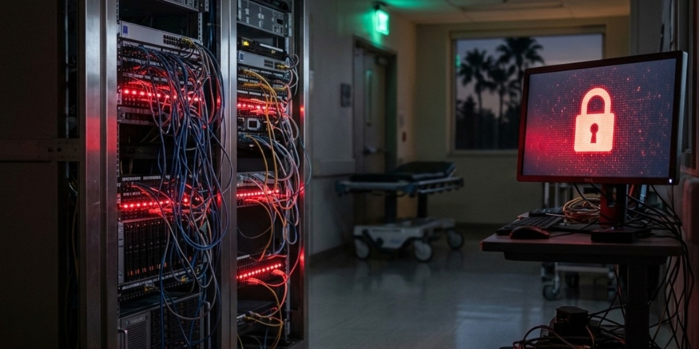

Geekotidien · Édition du 24 novembre 2026
Cyberattaque au CHU Guadeloupe
Plan blanc déclenché après une cyberattaque de grande ampleur

Le plan blanc a été déclenché le dimanche 22 novembre 2026 au CHU de la Guadeloupe (Pointe-à-Pitre), quelques heures après une cyberattaque de grande ampleur, selon l'AFP reprise par Libération.
L'attaque touche les trois sites de l'établissement, avec des impacts variables. Selon le directeur général, Eric Guyader, elle affecte grandement le système d'information et la téléphonie. Les équipes ont d'abord cru à une panne samedi soir, puis ont constaté des bases de données cryptées inaccessibles.
L'activité hospitalière est déprogrammée pour la semaine, sauf urgences vitales. Les patients doivent appeler le 15 avant de venir aux urgences. Les urgences et le SAMU restent opérationnels, selon le ministère de la Santé.
Le ministère a mis en place une cellule de crise. L'ANSSI et le CERT Santé accompagnent l'hôpital. La relance des logiciels et des bases de données doit se faire un par un, après contrôle de l'absence de virus.
Le directeur affirme que l'ANSSI a identifié un fournisseur informatique du CHU qui aurait été piraté il y a quelques mois. Cette piste n'est pas vérifiée, et aucun suspect n'est identifié à ce stade.
Le + : Pour les urgences, il faut appeler le 15 avant de se déplacer : les urgences et le SAMU restent ouverts.